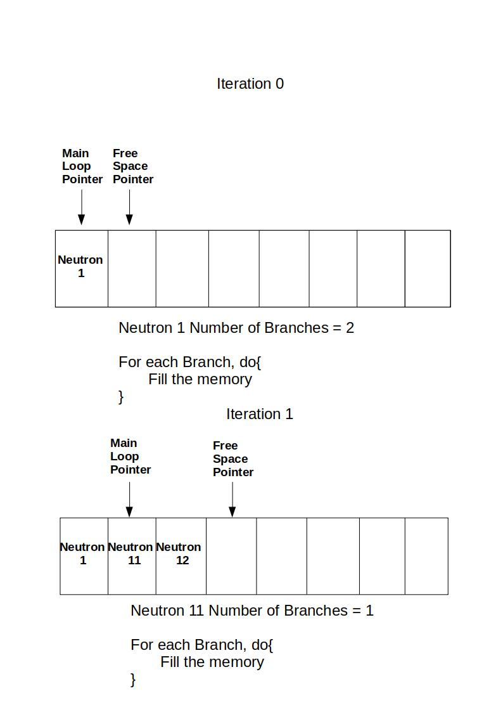

Simulation
Conteúdo
Simulation¶
All variables can be found at Variables.h
All neutron attributes fount at Neutron.h. They’re methodes are implemented at Neutron.cpp
Branching trees functions are on Trees.C
General Overview¶
The Computational Branching Process can be seen, as an iterative algorithm where a neutron object produces random amount of other neutron objects at each iteration. The neutron’s offspring is assigned to randomly chosen attributes based on the previous neutron-father attributes. After that, the children-neutrons are allocated in the free space memory region
A neutron object, is nothing more then a position in the pre-allocated memory. This block of memory, composes what is called in the script, a trunk that carries the attributes of all neutrons in the main loop. After the simulation’s end, a .root file is exported containing at each line, the attributes of each neutron created in the simulation.
The branching dies if the offspring is all null. In a computational way, it represents the fact that no new position in the memory is being allocated, while the variable in the main loop advances. The tree will die when the main loop variable reached the free space memory index.
Basic Simulation Variables¶
Int_t number_of_simulations ;
Int_t number_of_neutrons ;
number_of_simulations : Number of trees simulated
number_of_neutrons : Number of maximum neutrons that can be allocated in the memory trunk
Dices¶
Dices are Uniformly Distributed Pseudo-Random numbers, generated in the interval [0,1] and feed choice functions for random choices. A better mathematical justification for their use in Monte Carlo Simulations can be found in [DM79]. TRandom class was used for generating random numbers.
TRandom *r = new TRandom()
Float_t dice = r -> Rndm()
Choice Functions¶
Float_t Neutron::time_iter(Int_t dice , Float_t Q) : Return a random neutron’s time of interaction for a given dice and for a given Reaction Intensity. The choice follows the equation:
Input :
Int_t dice - Random number with normal distribution
Float_t Q - Reaction Intensity
Output:
Float_t - Random time of interaction
Int_t number_branches(Float_t dice , vector<Float_t> basic_prob) : Return a random offspring number of neutrons based on the basic probability function vector.
Input :
Int_t dice - Random number with normal distribution
vector<Float_t> basic_prob - Basic Probability Vector
Output:
Int_t - Random neutron's offspring
Trees¶
The tree functions constitute of two loops. The first one , the main loop , iterates over the number of neutrons and load the neutron-father attributes. The second one, the Branching Loop, assigns the neutron progeny based on the previous neutron-father attributes.
Note
All assigments in the Branching Loop are made in the free space memory position indexed by the free_space variable

ROOT Fille output¶
The final simulation output is a single .root fille in the data folder named with the first two decimal houses of the basic probability vector. It stores in the rows, all the generated neutron’s attributes for all the simulations
One-Point example
gen |
t_birth |
t_death |
sim |
|---|---|---|---|
0 |
0.00754 |
0.00932 |
0 |
1 |
0.00932 |
0.01112 |
0 |
1 |
0.00932 |
0.01321 |
0 |
2 |
0.01112 |
0.01347 |
0 |